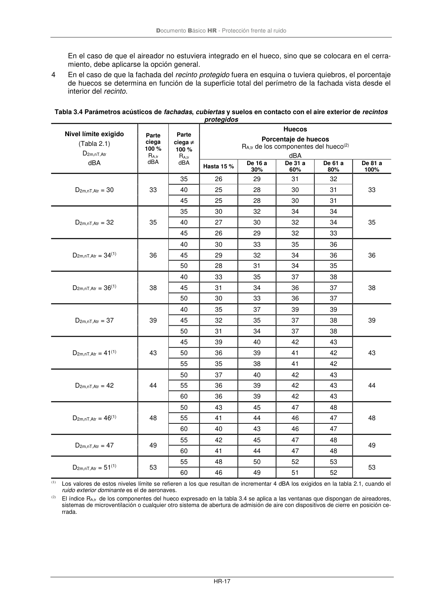

DB-HR Protección frente al ruido · edición 2019-12-20 · capa oficial
Documento DB-HR-oficial · SHA-256 del PDF a67baeca5138bb1f121f797d23a79a4557bd9ac4abacd954024893e05411eeab
Página física 23 de 80.
Copia fiel del PDF fuente · Fuente oficial
Ficha de la disposición en la fuente oficial
Formato: Texto de la página (Markdown)
Documento Básico HR - Protección frente al ruido HR-17 En el caso de que el aireador no estuviera integrado en el hueco, sino que se colocara en el cerra- miento, debe aplicarse la opción general. 4 En el caso de que la fachada del recinto protegido fuera en esquina o tuviera quiebros, el porcentaje de huecos se determina en función de la superficie total del perímetro de la fachada vista desde el interior del recinto. Tabla 3.4 Parámetros acústicos de fachadas, cubiertas y suelos en contacto con el aire exterior de recintos protegidos Nivel límite exigido (Tabla 2.1) D2m,nT,Atr dBA Parte ciega 100 % RA,tr dBA Parte ciega 100 % RA,tr dBA Huecos Porcentaje de huecos RA,tr de los componentes del hueco(2) dBA Hasta 15 % De 16 a 30% De 31 a 60% De 61 a 80% De 81 a 100% D2m,nT,Atr = 30 33 35 26 29 31 32 33 40 25 28 30 31 45 25 28 30 31 D2m,nT,Atr = 32 35 35 30 32 34 34 35 40 27 30 32 34 45 26 29 32 33 D2m,nT,Atr = 34(1) 36 40 30 33 35 36 36 45 29 32 34 36 50 28 31 34 35 D2m,nT,Atr = 36(1) 38 40 33 35 37 38 38 45 31 34 36 37 50 30 33 36 37 D2m,nT,Atr = 37 39 40 35 37 39 39 39 45 32 35 37 38 50 31 34 37 38 D2m,nT,Atr = 41(1) 43 45 39 40 42 43 43 50 36 39 41 42 55 35 38 41 42 D2m,nT,Atr = 42 44 50 37 40 42 43 44 55 36 39 42 43 60 36 39 42 43 D2m,nT,Atr = 46(1) 48 50 43 45 47 48 48 55 41 44 46 47 60 40 43 46 47 D2m,nT,Atr = 47 49 55 42 45 47 48 49 60 41 44 47 48 D2m,nT,Atr = 51(1) 53 55 48 50 52 53 53 60 46 49 51 52 (1) Los valores de estos niveles límite se refieren a los que resultan de incrementar 4 dBA los exigidos en la tabla 2.1, cuando el ruido exterior dominante es el de aeronaves. (2) El índice RA,tr de los componentes del hueco expresado en la tabla 3.4 se aplica a las ventanas que dispongan de aireadores, sistemas de microventilación o cualquier otro sistema de abertura de admisión de aire con dispositivos de cierre en posición ce- rrada.

Datos candidatos: compruebe celdas y notas en el PDF.